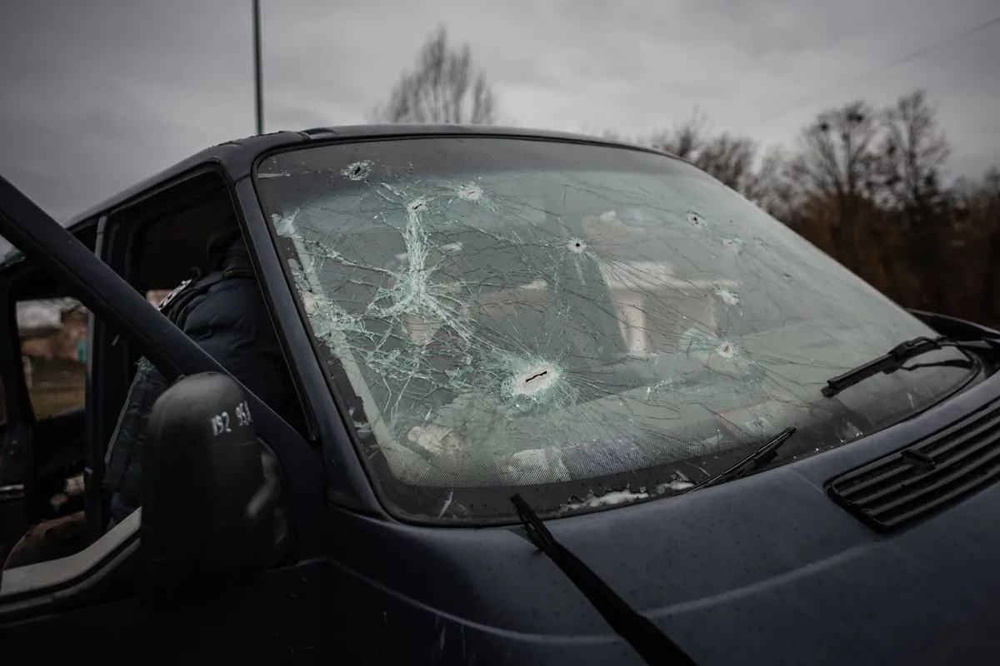

A full swap done at your curb, with calibration handled the same visit.
Windshield replacement in Melbourne, FL becomes the right call once a crack is too long to repair, reaches the edge of the glass, or sits directly in the driver’s line of sight. The old windshield is removed and a new piece of safety glass is bonded into the frame with automotive-grade urethane adhesive, restoring the structural support the roof depends on in a rollover.

A technician first cuts away the old urethane bead holding the windshield in place and lifts the damaged glass out of the frame. The pinch weld, the metal channel the windshield sits in, gets cleaned and inspected for rust or damage before anything new goes in, since installing over a corroded frame is one of the most common causes of leaks down the road.
Fresh urethane adhesive goes down in a continuous bead, the new windshield is set into place and pressed firmly into the adhesive, and the vehicle sits for a safe-drive-away period while the bond cures enough to hold structurally. Any vehicle with a windshield-mounted camera then goes through calibration before the job is considered done.
Replacement is the safer option once a crack has grown past what resin can reliably hold, once damage sits right in your line of sight, or once a windshield has more than two or three chips clustered together. Any crack that has reached the edge of the glass also calls for replacement, since that area carries the most structural stress and is the most likely to fail in a crash.
Storm damage from wind-blown debris during a Florida squall, and impact from debris on I-95, are the two most common reasons Melbourne drivers end up needing a full replacement rather than a repair.
A windshield is a load-bearing part of the vehicle’s structure, not just a piece of glass to see through. Once a crack crosses a certain length or reaches the edge, the glass no longer distributes stress evenly, which means it can no longer do its job of supporting the roof in a rollover or keeping the airbag positioned correctly during deployment.
Heat is the other factor unique to Florida. A crack that might stay stable through a mild winter up north tends to keep growing through a Melbourne summer, since the glass never gets a break from the daily heating and cooling cycle. By the time a crack is long enough to notice from the driver’s seat, repair usually is not enough to restore that lost strength.
The right glass and adhesive combination depends on your vehicle’s year, make, and model, and on which features are built into the windshield itself. A rain sensor, a heads-up display, acoustic sound-dampening layers, or a heating element for defrosting all require glass manufactured with that specific feature, not a generic pane.
Humidity also plays a role in which adhesive gets used and how long the safe-drive-away time runs. Florida’s year-round moisture changes how fast urethane cures compared to a dry climate, which is why your technician will give you an exact wait time for that specific day rather than a generic number pulled from a manual.
If you are not sure which side of that line your car falls on, read more about windshield repair or send us a photo and we will tell you plainly.
The physical installation takes about 45 to 90 minutes. After that, the urethane adhesive needs a minimum safe-drive-away time, often one to three hours depending on temperature and humidity, before the vehicle is safe to drive.
No, not immediately. The adhesive needs time to reach enough strength to hold the windshield in place during a crash. Your technician will tell you the exact wait time for that day’s heat and humidity before you get back on the road.
It should match the original in thickness, tint, and any features like a rain sensor or heads-up display cutout. OEM-equivalent glass is built to the same specifications as what came on the vehicle from the factory.
The damaged windshield is removed in one piece where possible and recycled through a glass recycler rather than sent to a landfill, since automotive glass can be reprocessed into new glass products.